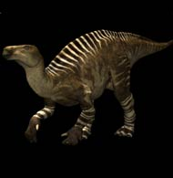
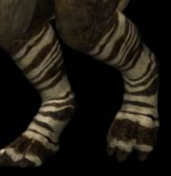

Hompejgji i Arbërit
Iguanadon
DINOARBI
Perioda e Kretaceusit të hershëm

Emri: Iguanodon
Shqiptimi: Ig-WAN-oh-DON
Domëthenia: Iguana tooth
Lloji i kafshës: Dinosaur (ornithopod)
Lloji i ushqimit që han: Bimë-ngrënës
I gjatë: Më i gjatë se 10 metre
Pesha: Më shumë se 5 tonë
Fosilet e gjetura: Angli,Gjermani,Spanjë,
Belgjik, Kinë and ndofta edhe në Amerikën Veriore
Iguanadoni ishte një barngrënës i madhe nga nënrendi Ornithopodeve, ku ka jetuar gjatë periodës së Kretaceousit dhe është një specie shumë e gjatë me një ngritje rreth 10 metra. Ai ka pasur një brirë sikur të breshkës në maje të gojës së tij e cila i shërbente për ta coptuar vegjetacionin. Ka pasur dhëmbë të dendur të renditura në rende paralele në pjesën e prapme të nofullës. Ai ishte njëri prej dinosaurit të parë i ditur se ai ka përtypur vegjetacionin. Ai ka pasur një muskul në nofullën e epërme, e cila mundësonte që ta përkul prej në pjese në pjesën tjetër. Reptilët përgjithësisht nuk mund ta përtypin ushqimin e tyre të njëjtë sikur sisorët , sepse ata nuk kanë muskuj special që ta lëvizin nofullën e poshtme nga një pozitë në pozitë tjetër. Iguanadoni nuk ishte në përjashtim, por me muskulin e nofullës së tij ai arrinte që ta përtyp shumë me efekt në rrugën e lukthit të tij. Fërkemet e këtij lloji të kafshës tregojnë se zakonisht ai ecte në të katërta. Ai mundte të ngrihej lart me dy këmbët e prapme të tij për tu shpëtuar nga predatorët, dhe ti përdor duart e tij për të mbledhur ushqim. Gishti i mesëm i tre gishtave ka qënë i mbledhur së bashku në një panxhë, ku gishti më i vogël i tij i shërbente që ta mbledh ushqimin e tepruar. Gishti i madhe i tij ka pasur një maje të ligë të justifikueshme. Iguanadoni e ka marrë emrin nga Iguani (hardhucë e sotme). Këto kafshë mund të kullotin në kope (grupe).
Prodhuar më;
1 janar 2003
Kontakto me mua në e-mailin tim:
kapreboys6@hotmail.com